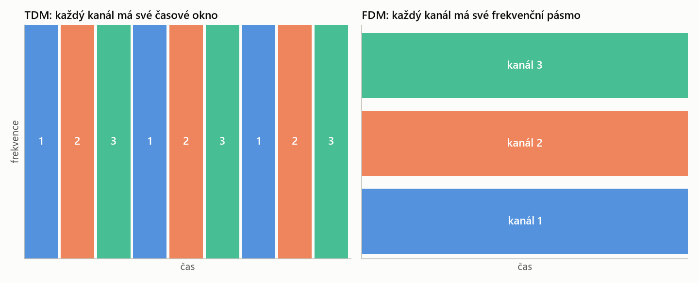
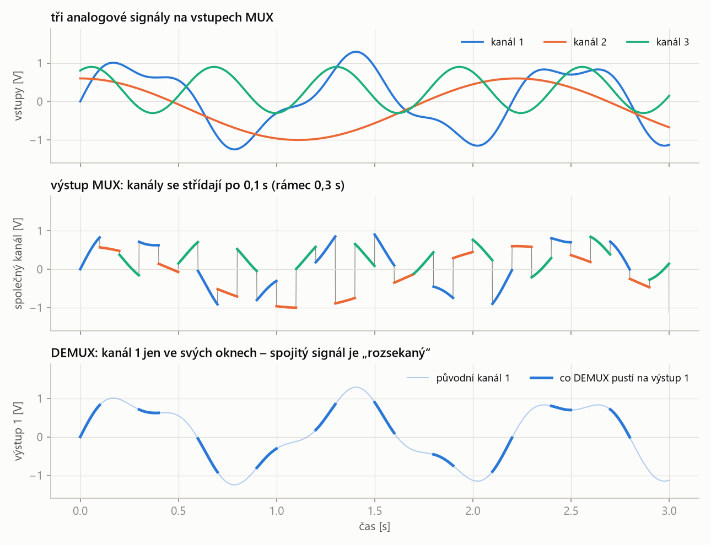
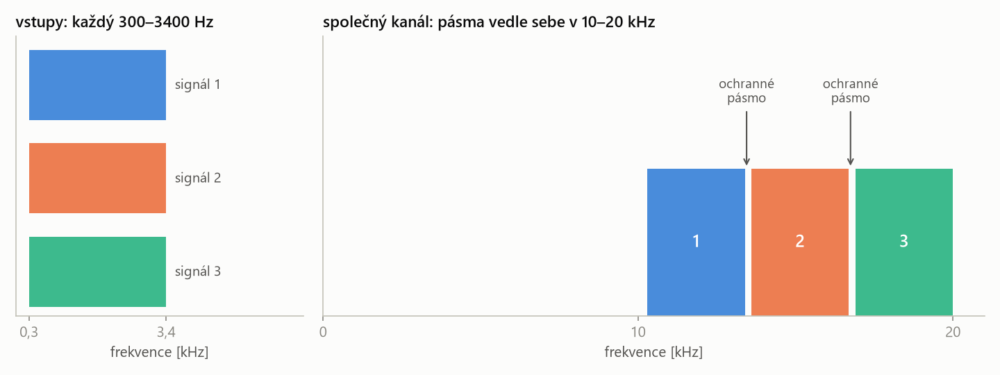
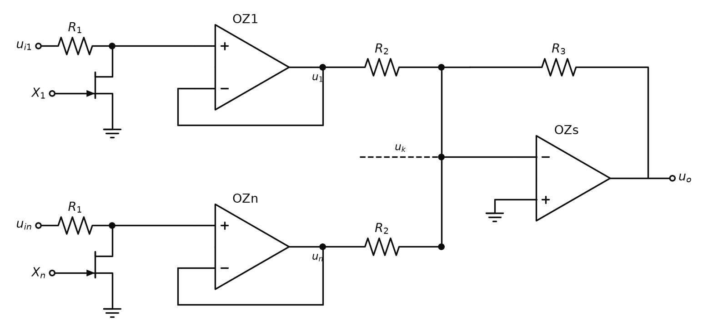
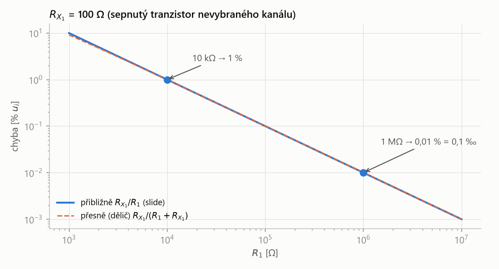
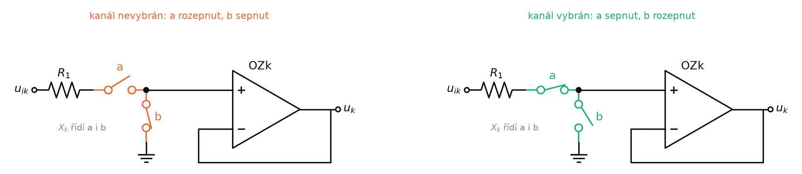

SAD – závěrečná zkouška · Multiplexace signálů – SAD · https://balnerm.github.io/pripravy/sad/zkouska/18_multiplexace.html
Přednáška 8
Multiplexace signálů
Biosignálů bývá víc (svody EKG, kanály EEG, teplota, tlak…), ale převodník, vodič nebo přenosová cesta je jen jedna. Multiplexace je způsob, jak po jedné cestě poslat víc signálů a na druhé straně je zase oddělit. Kapitola vysvětluje princip tří základních technik – časové (TDM), frekvenční (FDM) a vlnové (WDM) multiplexace – a pak ukazuje, jak se analogové signály přepínají v praxi: multiplexor se spínači a operačními zesilovači.
V měřicím řetězci (slide „Multiplex“) leží multiplexace mezi úpravou signálu a galvanickým oddělením (přednáška P9). Pojem multiplexace už známe z P1. Tam šlo o postupné přepínání vstupů na jeden převodník – to je jen jedna z technik, časový multiplex. Tato kapitola ukáže i další.
Multiplexování a demultiplexování
Podle slidu je multiplexování proces využívaný v elektronice, telekomunikacích a počítačových sítích, který kombinuje více analogových signálů nebo více digitálních datových toků do jednoho signálu. Smyslem je efektivní využití přenosového média – místo deseti vodičů stačí jeden. Demultiplexování je opačný proces: jeden tok signálu rozdělí zpět do více signálů. Smyslem je obnovení původních signálů z přenosového média.
Multiplexor (MUX nebo MPX, také datový selektor) je zařízení provádějící multiplexování: má více signálových vstupů \(X_0, X_1, \dots\), jeden výstup \(Y\) a výběrové (adresové) vstupy, jejichž kombinace určuje, který vstup se připojí na výstup.
přepínač „mnoho do jednoho“. Adresa (např. dva bity A, B) řekne, kterou ze čtyř cest pustit dál; ostatní jsou v tu chvíli odpojené.
Demultiplexor (DEMUX nebo DEMPX, také datový distributor) je zařízení provádějící demultiplexování: má jeden vstup \(X\), více výstupů \(Y_0, Y_1, \dots\) a výběrové vstupy, jejichž kombinace určuje, na který výstup se vstup připojí.
přepínač „jeden do mnoha“. Vybírá vždy jen jeden signál – ten, který byl multiplexorem spojen s ostatními – a pošle ho na jeho vlastní výstup.
Schéma: multiplexor 4 → 1 a demultiplexor 1 → 4 se dvěma adresovými bity A, B (podle slidů „Multiplexování“ a „Demultiplexování“). Zvýrazněna je cesta pro adresu A B = 0 1.
- MUX vybere podle adresy jeden vstup a pustí ho do společného kanálu; DEMUX ho podle stejné adresy pošle na odpovídající výstup.
- Obě strany musí přepínat současně (synchronně), jinak by signál \(X_1\) skončil na cizím výstupu.
- Dva adresové bity dají \(2^2 = 4\) kombinace, tedy 4 vstupy; tři bity 8 vstupů, čtyři bity 16.
Digitální multiplexor
Na slidu jsou u vstupů multiplexoru napsané kombinace adresy: \(X_0\) má \(A'B'\), \(X_1\) má \(A'B\), \(X_2\) má \(AB'\) a \(X_3\) má \(AB\) (čárka = negace). Každý vstup tedy projde jen při „své“ kombinaci A, B. V logických obvodech se to zapíše jako součet součinů:
| \(Y\) | výstup multiplexoru |
| \(X_0 \dots X_3\) | vstupy (logické úrovně 0/1) |
| \(A, B\) | adresové bity; \(\overline{A}\) (na slidu \(A'\)) je negace \(A\) |
| \(\cdot\), \(+\) | logický součin (AND) a součet (OR) |
Pro každou adresu je právě jeden součin nenulový, takže na výstup projde právě jeden vstup.
Digitální multiplexor je multiplexor složený z logických hradel, který na výstup přenáší pouze logickou úroveň (0 nebo 1) vybraného vstupu.
výstup se „znovu vyrobí“ hradly: buď je tam log. 0, nebo log. 1. Spojitou hodnotu (např. 0,37 V) takový obvod přenést neumí.
Analogový multiplexor je multiplexor, ve kterém vybraný vstup propojí s výstupem analogový spínač (tranzistor), takže na výstup přenáší spojitou hodnotu napětí vybraného vstupu.
uvnitř je „vodivá cesta“ přes sepnutý tranzistor, ne logický obvod. Co přijde na vstup, to (téměř beze změny) projde na výstup – spojitý signál i logické úrovně.
„Analogový multiplexer je automaticky i digitální, ale digitální nemůže být zároveň analogový. Digitální přenáší logiku, analogový přenáší spojitou hodnotu.“
MUX = mnoho vstupů do jednoho kanálu podle adresy, DEMUX = jeden kanál zpět na mnoho výstupů podle stejné adresy. Digitální MUX přenáší jen 0/1, analogový spojité napětí.
Základní techniky multiplexace
Techniky se podle slidu liší způsobem „řazení“ signálu do přenosového kanálu:
- Time Division Multiplexing – časový multiplex (TDM),
- Frequency Division Multiplexing – frekvenční multiplex (FDM),
- Wavelength Division Multiplexing – vlnový multiplex (WDM).
Zásadní rozdíl je kromě způsobu řazení i v tom, jak technika využívá přenosové pásmo kanálu (bandwidth, viz šířka pásma). Nejlépe je to vidět na rovině čas × frekvence: kanál je „plocha“, kterou si signály musí rozdělit.

- TDM: každý kanál dostane celé pásmo (celou výšku), ale jen na krátký časový úsek; pak přijde na řadu další.
- FDM: všechny kanály se přenášejí současně (celou šířku), ale každý jen v omezeném pásmu frekvencí.
- Mezi pásy FDM jsou mezery – ochranná pásma proti přeslechům (viz dále).
Přeslech (crosstalk) je nežádoucí pronikání signálu jednoho kanálu do jiného kanálu téhož přenosového systému.
jako když v telefonu slyšíš cizí hovor. V měření to znamená, že v naměřeném EKG svodu je kousek signálu ze sousedního svodu.
Časový multiplex (TDM)
Časový multiplex (Time Division Multiplexing, TDM) je technika, která umožňuje posílat více signálů prostřednictvím společného přenosového kanálu přidělením pevného časového úseku (okna) každému signálu.
signály se střídají jako řečníci s časovým limitem: každý dostane své okno, mluví celým hlasem (celým pásmem), a pak předá slovo dalšímu. Pořadí se pořád opakuje.
- Na obou koncích kanálu je přepínač – na slidu „Mux“ a „Demux“ s hovory Conversation A–E. MUX postupně připojuje vstupy A, B, C, … na společné vedení.
- DEMUX na druhém konci přepíná synchronně se MUX: ve chvíli, kdy vedením jde hovor A, je připojen výstup A.
- „Dostávám časové sloty“: každý kanál má v opakujícím se rámci své okno, ve kterém mu patří celý kanál.
- V době přenosu jednoho kanálu jsou ostatní kanály blokovány. Signály se nikdy nepřenášejí současně, proto je přeslech minimální.
Podle slidu se TDM využívá pro multiplexování digitálních i analogových signálů. U digitálního signálu je to přirozené – data se posílají po blocích. U analogového signálu je potřeba si uvědomit, co se se spojitým průběhem stane:

- Ve společném kanálu (uprostřed) je v každém okamžiku jen jeden signál – kanály se nemíchají.
- Z kanálu 1 se ale přenese jen třetina průběhu (tučně dole). Spojitý analogový signál je TDM „rozsekaný“ – mezi okny o něm nic nevíme.
- Analogový TDM je proto ve skutečnosti vzorkování: každý kanál musí být navštíven dost často vzhledem k tomu, jak rychle se mění. Čím víc kanálů, tím méně často na každý dojde řada.
Kanály se v TDM o čas dělí: pokud jeden převodník obsluhuje \(N\) kanálů, připadne na každý kanál jen \(1/N\) jeho vzorkovací frekvence. Časový multiplex tedy šetří převodník a vodiče, ale „platí“ se za to rychlostí převodu každého kanálu.
TDM: každý kanál má pevné časové okno a v něm celé pásmo; ostatní jsou blokované, takže přeslech je minimální. MUX a DEMUX musí přepínat synchronně; analogový signál se tím rozseká na vzorky.
Frekvenční multiplex (FDM)
Frekvenční multiplex (Frequency Division Multiplexing, FDM) je technika, která kombinuje více signálů pro současný přenos přes sdílené komunikační médium tak, že každý signál zabírá v přenosovém kanálu vlastní, oddělené pásmo frekvencí.
jako rozhlasové stanice: všechny vysílají najednou, ale každá na jiné frekvenci. Přijímač si „naladí“ jen tu svou a ostatní odfiltruje.
- Signály mají často stejné frekvenční pásmo – na slidu tři hovorové signály, každý v pásmu 300–3400 Hz. Kdyby se jen sečetly, nešly by od sebe oddělit.
- Proto se každý signál posune (modulací na vlastní nosnou frekvenci) do jiné části spektra. Na slidu se tři signály posunou vedle sebe do pásma 10–20 kHz.
- Posunuté signály se sečtou a přenášejí se současně po jednom kanálu – v čase spojitě, bez oken.
- Na přijímací straně oddělí každý signál pásmová propust naladěná na jeho pásmo a signál se posune zpět do původního pásma.

- Každý signál má šířku \(3400 - 300 = 3100\) Hz; tři signály potřebují 9,3 kHz. Ve společném pásmu 10 kHz tak na ochranná pásma zbývá jen 0,7 kHz.
- Každý kanál smí využít jen svůj úsek pásma – celé pásmo kanálu nemá k dispozici žádný z nich.
- Bez ochranných pásem by se pásma dotýkala a reálné filtry (se strmostí, ne svislou hranou) by propouštěly kus sousedního kanálu.
Ochranné pásmo (guard band) je nevyužitý úsek frekvencí mezi pásmy sousedních kanálů frekvenčního multiplexu, který omezuje přeslechy mezi nimi.
„nárazník“ mezi kanály. Filtr přijímače nemá svislou hranu, ale klesá postupně; ochranné pásmo mu dá prostor, aby utlumil sousední kanál dřív, než začne.
Podle slidu se FDM využívá pro multiplexování analogových signálů. Má dvě nevýhody:
- sice probíhá současný přenos zdrojových signálů, ale ve frekvenční oblasti je možné využít jen omezené přenosové pásmo, definované rozsahem frekvencí kanálu,
- díky současnému přenosu více kanálů může docházet k přeslechům mezi kanály – oddělují je jen filtry, a ty nejsou ideální.
FDM: všechny kanály současně, každý ve svém pásmu frekvencí (posunutý modulací). Využije jen část pásma a kvůli současnému přenosu hrozí přeslechy, které omezují ochranná pásma.
Vlnový multiplex (WDM)
Vlnový multiplex (Wavelength Division Multiplexing, WDM) je technika multiplexace opticky modulovaných signálů, při které je každý signál přenášen světlem jiné vlnové délky (barvy) a všechny vlnové délky se současně šíří jedním optickým vláknem.
každý kanál „svítí jinou barvou“. Barvy se složí do jednoho paprsku, projdou vláknem a na konci se hranolem zase rozloží na jednotlivé barvy.
- WDM vychází z fyziky světla: paprsek bílého světla lze rozložit na spektrum dílčích vlnových délek (jako hranol rozloží světlo na duhu).
- Každá dílčí vlnová délka (barva) je modulována samostatně vstupním signálem.
- Dílčí modulované signály se optickým hranolem složí zpět do „bílého světla“, které se přenáší optickým vláknem.
- Na konci vlákna druhý hranol světlo opět rozloží a každou barvu přijme vlastní přijímač.
Schéma: princip WDM podle slidu – zdroje, hranol, optické vlákno, hranol, přijímače.
- Všechny barvy jdou vláknem současně – přenos je (jako u FDM) v časové oblasti kontinuální.
- Kanály se rozlišují vlnovou délkou, tedy vlastně frekvencí světla (\(\lambda = c/f\)). Proto je WDM technika multiplexace příbuzná FDM, jen v optické oblasti.
- Mezi vysílačem a přijímačem vede jen sklo nebo plast vlákna, žádný vodič.
Podle slidu se WDM využívá pro přenos opticky modulovaných signálů. Díky optickému vláknu (tedy neelektrickému vedení) je technika WDM současně galvanickým oddělením signálové cesty – mezi oběma stranami nemůže protékat proud. Tím kapitola navazuje na další přednášku o galvanickém oddělení.
WDM: každý signál moduluje světlo jiné vlnové délky, hranol barvy složí do jednoho vlákna a na konci je zase rozloží. Je to „FDM se světlem“, přenos je spojitý v čase a vlákno zároveň galvanicky odděluje.
Srovnání technik
| TDM | FDM | WDM | |
|---|---|---|---|
| co se dělí | čas (okna) | frekvence (pásma) | vlnové délky (barvy) |
| přenos kanálů | postupně, střídavě | současně, spojitě v čase | současně, spojitě v čase |
| pásmo pro kanál | celé pásmo kanálu | jen omezená část | jen vlastní vlnová délka |
| přeslech | minimální (ostatní blokovány) | může vznikat (filtry) | příbuzné FDM |
| signály | digitální i analogové | analogové | opticky modulované |
| médium | vodič, převodník | vodič, rádiový kanál | optické vlákno (= galvanické oddělení) |
„TDM dělí čas: každý kanál dostane svůj časový slot a v něm celé pásmo, ostatní jsou blokované, proto je přeslech minimální; spojitý analogový signál se tím ale rozseká. FDM dělí frekvence: všechny kanály jdou současně, každý posunutý do svého pásma, takže má jen omezenou část pásma a mezi kanály mohou vznikat přeslechy – proto ochranná pásma. WDM je obdoba FDM se světlem: každá vlnová délka nese jeden signál, hranol je složí do optického vlákna a vlákno zároveň galvanicky odděluje.“
Multiplexor analogových signálů s OZ
Poslední tři slidy ukazují, jak se v praxi přepíná analogový signál – tedy multiplexor, jaký stojí např. před A/D převodníkem. Každý vstup má svůj rezistor \(R_1\), tranzistor \(X_i\) zapojený k zemi a napěťový sledovač OZi. Výstupy sledovačů se přes \(R_2\) sčítají v zesilovači OZS.

- Tranzistor není v sérii se signálem, ale paralelně k zemi: když je sepnutý, „zkratuje“ neinvertující vstup sledovače na zem.
- \(R_1\) a sepnutý tranzistor tvoří dělič napětí – vstupní signál zůstane na \(R_1\), na sledovač se dostane jen nepatrná část.
- Všechny kanály končí ve společném uzlu před OZS; projde ale jen ten, jehož tranzistor je rozepnutý.
- Výchozí stav: všechny tranzistory \(X_i\) jsou sepnuty (u JFET s kanálem N při napětí gate 0 V). Signál každého vstupu je přes \(R_1\) nulován – tranzistory posílají do země všechny signály kromě toho, který chci.
- Výběr vstupu: k selekci dochází rozepnutím příslušného tranzistoru (zde \(X_1\), impuls na gate −10 V JFET zavře). Uzel za \(R_1\) přestane být spojen se zemí a signál \(u_{i1}\) projde dál.
- Sledovač: vybraný signál prochází napěťovým sledovačem. Ten má velmi velký vstupní odpor (\(R_{OZ_n} > 100\ \text{M}\Omega\)), proto je vliv \(R_1\) na vybraný signál zanedbatelný, a jeho výstup \(u_1\) je tvrdý zdroj.
- Sčítání: výstupy OZi jsou přivedeny přes \(R_2\) na rozdílový součtový zesilovač OZS. Nevybrané kanály mají na výstupu (téměř) nulu, takže výsledek obsahuje jen vybraný kanál.
OZS je zapojen jako invertující zesilovač s více vstupy: invertující vstup je na virtuální nule, proudy \(u_k/R_2\) ze všech kanálů se sečtou a protečou \(R_3\):
\[ u_o = -\frac{R_3}{R_2}\left(u_1 + u_2 + \dots + u_n\right) \]Když je vybraný jen kanál \(k\) a ostatní \(u_i \approx 0\):
\[ u_o \approx -\frac{R_3}{R_2}\,u_k \]| \(u_o\) | výstupní napětí multiplexoru |
| \(u_1 \dots u_n\) | výstupy sledovačů jednotlivých kanálů |
| \(u_k\) | výstup sledovače vybraného kanálu (\(= u_{ik}\)) |
| \(R_2\) | vstupní rezistory součtového zesilovače (stejné pro všechny kanály) |
| \(R_3\) | rezistor ve zpětné vazbě OZS; poměr \(R_3/R_2\) je zesílení |
- „Velká impedance = omezím přeslechy“: sledovač má obrovský vstupní odpor, takže neodebírá proud ze zdroje signálu ani z děliče \(R_1\)–tranzistor.
- Výstup sledovače je tvrdý zdroj. Sčítací uzel je na virtuální nule, takže kanály se přes \(R_2\) navzájem neovlivňují – signál jednoho kanálu se „nepřelije“ zpět do jiného.
- Každý kanál je tak oddělen dvakrát: tranzistorem k zemi a vlastním OZ.
Chyba „nulového“ napětí
Vliv \(R_1\) na vybraný kanál je zanedbatelný (\(R_{OZ_n} > 100\ \text{M}\Omega\)). Vliv však mají impedance sepnutých tranzistorů: sepnutý tranzistor není ideální zkrat, má odpor \(R_X\). Nevybraný kanál proto není přesně nula – \(R_1\) a \(R_X\) tvoří dělič a na sledovač projde malý zbytek signálu. Ten se na výstupu přičte k vybranému kanálu jako chyba.
Je to dělič \(R_1\) a \(R_{X_1}\) zjednodušený pro \(R_1 \gg R_{X_1}\):
\[ u_i\,\frac{R_{X_1}}{R_1 + R_{X_1}} \approx u_i\,\frac{R_{X_1}}{R_1} \]| \(u_{o(0)}\) | napětí, které projde z nevybraného („vynulovaného“) kanálu – chyba |
| \(u_i\) | vstupní napětí nevybraného kanálu |
| \(R_{X_1}\) | odpor sepnutého tranzistoru \(X_1\) |
| \(R_1\) | vstupní rezistor kanálu |
Sepnutý tranzistor má \(R_{X_1} = 100\ \Omega\).
1. Pro \(R_1 = 10\ \text{k}\Omega\):
\[ \frac{R_{X_1}}{R_1} = \frac{100\ \Omega}{10\,000\ \Omega} = 0{,}01 = 1\ \% \]Pro \(R_1 > 10\ \text{k}\Omega\) bude tedy chyba \(< 1\ \%\ u_i\).
2. Pro \(R_1 = 1\ \text{M}\Omega\):
\[ \frac{R_{X_1}}{R_1} = \frac{100\ \Omega}{1\,000\,000\ \Omega} = 10^{-4} = 0{,}1\ \text{‰} \]Pro \(R_1 > 1\ \text{M}\Omega\) bude chyba \(< 0{,}1\ \text{‰}\ u_i\) (tj. 0,01 %).
Přesný vzorec děliče dá 0,99 % a 0,0099 % – zjednodušení na \(R_{X_1}/R_1\) je tu naprosto dostatečné.

- Desetkrát větší \(R_1\) = desetkrát menší chyba (přímka v log-log grafu).
- Přibližný vzorec ze slidu a přesný dělič splývají, dokud je \(R_1\) mnohem větší než \(R_{X_1}\).
Pro vybraný kanál tvoří \(R_1\) dělič se vstupním odporem sledovače. Ten je velký (\(> 100\ \text{M}\Omega\)), ale konečný: \(R_1\) musí být mnohem větší než \(R_X\) (malá chyba nevybraných kanálů) a zároveň mnohem menší než vstupní odpor OZ (žádná ztráta vybraného kanálu). Pro \(R_1 = 10\ \text{k}\Omega\) a 100 MΩ je ztráta jen 0,01 %, pro \(R_1 = 1\ \text{M}\Omega\) už asi 1 %. Proto se volí OZ s co největším vstupním odporem.
Sériově-paralelní spínač
Vliv impedance tranzistorů lze eliminovat připojením sériově-paralelních spínačů do každého signálového vstupu. V takovém případě bude vstupní signál zcela odpojen a neinvertující vstup příslušného napěťového sledovače uzemněn.
Sériově-paralelní spínač je dvojice spínačů řízených společným signálem \(X_k\): spínač a zapojený v sérii se signálovým vstupem a spínač b zapojený paralelně, ze vstupu sledovače na zem, přičemž je vždy sepnut právě jeden z nich.
signál se nejdřív odpojí (a) a pak se vstup pro jistotu ještě uzemní (b). Nevybraný kanál tak není „skoro nula“ přes dělič, ale opravdu nula.

- Nevybraný kanál (vlevo): a je rozepnutý, takže \(u_{ik}\) je od sledovače zcela odpojeno; b uzemní vstup sledovače. Odpor sepnutého b nevadí – teče jím jen zanedbatelný proud do vstupu OZ, takže na něm není žádný úbytek.
- Vybraný kanál (vpravo): a je sepnutý a signál jde na sledovač; b je rozepnutý a nic neuzemňuje. Odpor sepnutého a je v sérii s obrovským vstupním odporem OZ, proto také nevadí.
- Dělič \(R_1\)–\(R_X\) z předchozího zapojení zmizel – chyba \(u_i R_X/R_1\) už nevzniká.
Analogový MPX: tranzistory k zemi kanály standardně nulují, kanál se vybere rozepnutím jeho tranzistoru, sledovač oddělí a OZS sečte. Odpor sepnutého tranzistoru způsobí chybu \(u_i R_X/R_1\) (proto velké \(R_1\)); úplně ji odstraní sériově-paralelní spínač.
„Ve výchozím stavu jsou všechny tranzistory sepnuté a posílají do země všechny signály kromě toho, který chci. Kanál vyberu rozepnutím jeho tranzistoru, signál pak projde sledovačem – velká vstupní impedance omezí přeslechy – a přes \(R_2\) na součtový zesilovač. Sepnutý tranzistor ale není ideální zkrat, s \(R_1\) tvoří dělič a nevybraný kanál propustí \(u_i R_X/R_1\); pro 100 Ω a 10 kΩ je to 1 %. Řešením je sériově-paralelní spínač: vstup se odpojí a zároveň uzemní.“
Shrnutí
Multiplexování kombinuje více analogových signálů nebo digitálních datových toků do jednoho signálu, aby se efektivně využilo přenosové médium; demultiplexování je opačný proces, který obnoví původní signály. Multiplexor (datový selektor) vybírá podle adresy jeden vstup, demultiplexor (datový distributor) ho podle stejné adresy posílá na odpovídající výstup. Digitální multiplexor z hradel přenáší jen logickou úroveň, analogový se spínači přenáší spojitou hodnotu – a tedy i logiku.
Základní techniky se liší způsobem „řazení“ signálu do kanálu a využitím pásma. TDM dává každému signálu pevné časové okno a v něm celé pásmo kanálu; ostatní kanály jsou blokovány, přeslech je minimální; používá se pro digitální i analogové signály, analogový signál se ale rozseká na vzorky. FDM přenáší všechny signály současně, každý posunutý do vlastního pásma; každý kanál má jen omezenou část pásma a mohou vznikat přeslechy, proti kterým slouží ochranná pásma; používá se pro analogové signály. WDM je obdoba FDM se světlem: každá vlnová délka je modulována samostatně, hranol je složí do optického vlákna; přenos je spojitý v čase a vlákno zároveň galvanicky odděluje.
Analogový multiplexor s OZ má na každém vstupu \(R_1\) a tranzistor k zemi, který je ve výchozím stavu sepnutý a signál nuluje. Kanál se vybere rozepnutím tranzistoru, projde sledovačem a přes \(R_2\) do součtového zesilovače OZS. Odpor sepnutého tranzistoru způsobí, že nevybraný kanál propustí \(u_i R_X/R_1\) (pro 100 Ω a 10 kΩ 1 %, pro 1 MΩ 0,1 \text{‰}). Sériově-paralelní spínač vstup zcela odpojí a uzemní, a tuto chybu odstraní.
Take-home messages
- Multiplexace = více signálů do jednoho kanálu kvůli efektivnímu využití média; demultiplexace je obnoví.
- MUX a DEMUX přepínají podle stejné adresy, synchronně; \(n\) adresových bitů vybere z \(2^n\) vstupů.
- TDM dělí čas: celé pásmo, pevné okno, minimální přeslech; analogový signál se rozseká.
- FDM dělí frekvence: současný přenos, omezené pásmo, hrozí přeslechy → ochranná pásma.
- WDM = FDM se světlem v optickém vlákně, zároveň galvanické oddělení.
- Analogový MUX přenese i logiku, digitální jen logiku.
- Analogový MPX s OZ: tranzistory k zemi nulují, výběr = rozepnutí, sledovač odděluje, OZS sčítá.
- Chyba nevybraného kanálu \(u_i R_X/R_1\); odstraní ji sériově-paralelní spínač.
Otázky ke zkoušce
Co je multiplexování a demultiplexování? Jak se nazývají zařízení a jak vybírají kanál?
Multiplexování je proces, který kombinuje více analogových signálů nebo více digitálních datových toků do jednoho signálu. Smyslem je efektivní využití přenosového média. Provádí ho multiplexor (MUX, MPX, datový selektor).
Demultiplexování je opačný proces: jeden tok signálu rozdělí do více signálů, smyslem je obnovení původních signálů. Provádí ho demultiplexor (DEMUX, DEMPX, datový distributor).
Kanál se vybírá adresovými vstupy: dva bity A, B dají 4 kombinace, tedy 4 vstupy. Pro MUX 4 → 1 platí:
\[ \begin{aligned} Y = {} & \overline{A}\,\overline{B}\,X_0 + \overline{A}\,B\,X_1 \\ & + A\,\overline{B}\,X_2 + A\,B\,X_3 \end{aligned} \]DEMUX musí mít stejnou adresu jako MUX ve stejném okamžiku (synchronizace), jinak by signál skončil na cizím výstupu.
Vysvětlete princip časového multiplexu (TDM). Proč je přeslech minimální a co se děje s analogovým signálem?
TDM posílá více signálů společným kanálem tak, že každý signál dostane pevný časový úsek. MUX postupně připojuje vstupy na vedení a DEMUX synchronně přepíná výstupy. V každém okně má kanál k dispozici celé přenosové pásmo.
V době přenosu jednoho kanálu jsou ostatní kanály blokovány – signály se nikdy nepřenášejí současně, a proto je přeslech minimální.
TDM se používá pro digitální i analogové signály. Spojitý analogový signál se ale přenese jen ve svých oknech, je „rozsekaný“ – ve skutečnosti se vzorkuje. Každý kanál musí být navštíven dost často a při \(N\) kanálech na něj připadne jen \(1/N\) času.
Vysvětlete princip frekvenčního multiplexu (FDM). Proč u něj vznikají přeslechy a jak se omezují?
FDM přenáší více signálů současně přes sdílené médium. Každý signál se posune (modulací na vlastní nosnou) do jiného frekvenčního pásma – na slidu tři hovorové signály 300–3400 Hz vedle sebe do pásma 10–20 kHz. Na přijímací straně každý signál oddělí pásmová propust a posune se zpět.
- Každý kanál může využít jen omezené pásmo, ne celé pásmo kanálu.
- Kanály se přenášejí současně a oddělují je jen filtry, které nemají svislou hranu – proto mohou vznikat přeslechy.
- Omezují je ochranná pásma (nevyužité mezery mezi pásmy kanálů).
FDM se používá pro analogové signály.
Co je vlnový multiplex (WDM), jak souvisí s FDM a proč je zároveň galvanickým oddělením?
WDM vychází z fyziky světla: bílé světlo lze rozložit na spektrum vlnových délek. Každá dílčí vlnová délka (barva) je modulována samostatně vstupním signálem, dílčí signály se optickým hranolem složí zpět do „bílého světla“ a přenášejí se optickým vláknem. Na konci je druhý hranol rozloží na barvy pro jednotlivé přijímače.
S FDM je příbuzná, protože kanály se liší vlnovou délkou, tedy frekvencí světla, a přenos je jako u FDM v čase kontinuální. Používá se pro opticky modulované signály.
Optické vlákno je neelektrické vedení – mezi vysílačem a přijímačem není vodivé spojení, takže WDM současně galvanicky odděluje signálovou cestu.
Porovnejte TDM, FDM a WDM z hlediska využití přenosového pásma a času.
- TDM: kanály se střídají v čase; každý má v okně celé pásmo, ale jen část času. Přeslech minimální; digitální i analogové signály.
- FDM: kanály jdou současně a spojitě v čase, ale každý jen v omezené části pásma. Možné přeslechy; analogové signály.
- WDM: jako FDM, jen kanály jsou vlnové délky světla v optickém vlákně; spojitý přenos a navíc galvanické oddělení.
Zkráceně: TDM dělí čas, FDM a WDM dělí frekvence (vlnové délky).
Popište multiplexor analogových signálů s OZ ze slidu. Jak se vybírá kanál a k čemu slouží sledovače a OZS?
Každý vstup má rezistor \(R_1\), tranzistor \(X_i\) z uzlu za \(R_1\) na zem a napěťový sledovač OZi. Výstupy sledovačů jdou přes \(R_2\) na součtový zesilovač OZS se zpětnou vazbou \(R_3\).
- Ve výchozím stavu jsou všechny tranzistory sepnuté a signály jsou přes \(R_1\) nulovány.
- Kanál se vybere rozepnutím jeho tranzistoru (např. \(X_1\) impulsem z 0 V na −10 V).
- Vybraný signál projde sledovačem: velký vstupní odpor nezatěžuje \(R_1\) ani zdroj a omezuje přeslechy, výstup je tvrdý zdroj.
- OZS sečte výstupy všech kanálů; nevybrané jsou nulové, takže:
Odkud se bere chyba „nulového“ napětí analogového multiplexoru, jak velká je a jak ji zmenšit nebo odstranit?
Sepnutý tranzistor nevybraného kanálu není ideální zkrat, má odpor \(R_X\). S rezistorem \(R_1\) tvoří dělič, takže na sledovač projde zbytek signálu:
\[ u_{o(0)} \cong u_i \cdot \frac{R_{X_1}}{R_1} \]Pro \(R_{X_1} = 100\ \Omega\):
\[ \begin{aligned} R_1 &= 10\ \text{k}\Omega: & \text{chyba} &= 1\ \%\ u_i \\ R_1 &= 1\ \text{M}\Omega: & \text{chyba} &= 0{,}1\ \text{‰}\ u_i \end{aligned} \]Chybu zmenší větší \(R_1\) (musí ale zůstat mnohem menší než vstupní odpor sledovače). Odstraní ji sériově-paralelní spínač: spínač a v sérii vstup zcela odpojí a spínač b uzemní neinvertující vstup sledovače, takže dělič \(R_1\)–\(R_X\) vůbec nevznikne.
Jaký je rozdíl mezi analogovým a digitálním multiplexorem?
Digitální multiplexor je složen z logických hradel a na výstup přenáší jen logickou úroveň (0/1) vybraného vstupu. Analogový multiplexor propojí vybraný vstup s výstupem analogovým spínačem (tranzistorem), takže přenese spojitou hodnotu napětí.
Analogový multiplexor je proto automaticky použitelný i pro digitální signál (logická úroveň je jen zvláštní případ napětí), ale digitální nemůže přenést analogový signál. Digitální přenáší logiku, analogový přenáší spojitou hodnotu.